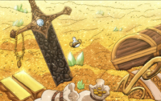
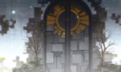

Masmorra é um marco de origens desconhecidas que poderiam surgir em vários locais sem
qualquer aviso prévio. Uma masmorra foi descrita pelos magos como uma tumba antiga que foi estabelecida há
muito tempo. Nelas encontram-se geralmente inúmeros tesouros, que foram deixados pelas pessoas que as
construíram. Esses tesouros podem variar de uma poderosa ferramenta mágica para uma magia antiga.

Estruturas
A estrutura do lado externo de uma masmorra é frequentemente dotada de um estilo arquitetônico simples e
plano, como em uma torre de tijolos com uma única entrada. Eles também podem ter a aparência de uma ruína de
vários edifícios,mas ainda com apenas um único portão de entrada.
O lado interno de uma masmorra geralmente é muitas vezes maior do que o lado externo. Isso é devido à maior
densidade de mana que distorce e embaralha o espaço dentro da masmorra ao ponto de também fazer a água correr ao
contrário, por exemplo. Além disso, a construção tem instalada inúmeras armadilhas para evitar que alguém chegue
aos tesouros. As armadilhas são geralmente em forma de círculos mágicos quem ativam após contato e vêm em grande
variedade de atributos, desde baseadas em fogo as baseadas em plantas.
Além disso, outras ameaças dentro da masmorra seriam criaturas mágicas que poderiam atacar a qualquer momento
. Posteriormente, a alta densidade de mana também distorce a força gravitacional da calabouço onde um rio
poderia fluir das paredes para os tetos. Alguma área da masmorra também poderia possuir um campo
gravitacional menor, o que poderia fazer qualquer coisa na área flutuar.
No centro de uma masmorra encontra-se o seu tesouro. Semelhante a todas as estruturas no calabouço, o
portão para o tesouro também é composto puramente de mana com um mecanismo de bloqueio que impede que alguém
entre no salão.
No centro de uma masmorra encontra-se o seu tesouro. Semelhante a todas as estruturas no
calabouço, o portão para o tesouro também é composto puramente de mana com um mecanismo de bloqueio que
impede que alguém entre no salão. O lado interno do tesouro toma uma forma de um salão espaçoso onde todos
os tesouros são colocados de forma desorganizada. Em um caso em que alguém consiga entrar na sala de
tesouros, a masmorra entraria em colapso assim que os principais tesouros fossem levados. Os locais onde os
principais tesouros estavam localizados são geralmente o ponto de origem da caverna.
